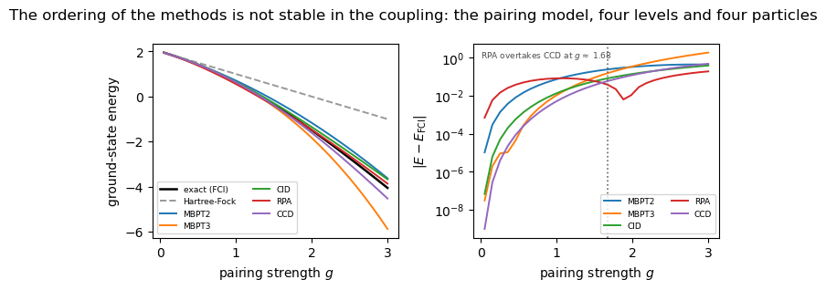
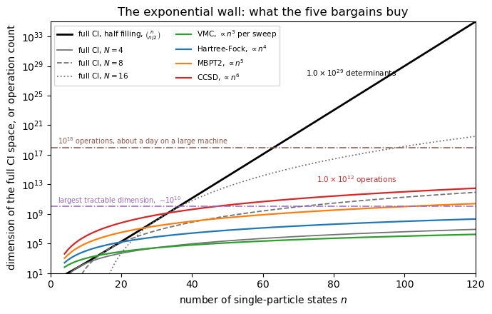
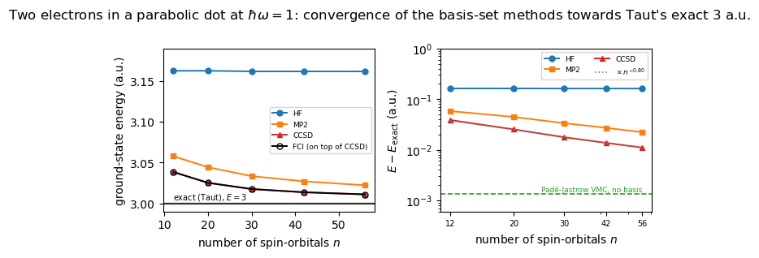

22. Concluding remarks and perspectives#
Companion notebook to Chapter 21 of Quantum mechanics for many-particle
systems. The closing chapter argues that the twenty chapters before it are
five different bargains struck with a single problem, and it supports the
argument with three claims that are really claims about curves rather than
about numbers. We compute all three here, using nothing but the programs of
the earlier chapters: fci.py, mbpt.py, rpa.py, coupledcluster.py and
quantumdot.py. No physics is reimplemented; every energy in this notebook
comes out of the same routines that produced the tables of the chapters they
belong to.
The three claims are:
The ordering of the methods is not stable in the coupling. For the pairing model we follow second- and third-order perturbation theory, doubles CI, the RPA and coupled-cluster doubles from weak coupling out to \(g = 3\), and watch the ranking turn over.
The exponential wall is the reason all of this exists. The dimension \(\binom{n}{N}\) of the full CI space is put on the same axes as the polynomial operation counts of Hartree-Fock, MBPT2, CCSD and variational Monte Carlo.
On one system where the exact answer is known, the methods can be ranked honestly. Two electrons in a two-dimensional parabolic trap at \(\hbar\omega = 1\), where Taut’s closed-form solution gives exactly \(3\) a.u., treated by Hartree-Fock, MP2, CCSD and full CI in oscillator bases of increasing size.
Contents:
Setup
The pairing model: no method is uniformly best
The exponential wall and the five bargains
Two electrons in a quantum dot, against the exact answer
What the three figures say together
22.1. 1. Setup#
The modules of the earlier chapters are imported directly, so that this
notebook and the chapters can never drift apart. mbpt itself imports fci,
hartreefock and rpa and reuses their model builders, which is why the
pairing Hamiltonian is guaranteed to be the same object in every calculation
below.
import sys, os, glob
# the chapter programs live in BookPrograms/chapterNN; put them all on the path
for _d in sorted(glob.glob(os.path.join("..", "BookManybody",
"BookPrograms", "chapter*"))):
if _d not in sys.path:
sys.path.insert(0, _d)
import numpy as np
import matplotlib.pyplot as plt
import fci
import mbpt
import rpa as rpamod
import coupledcluster as cc
import quantumdot as qd
np.set_printoptions(precision=6, suppress=True, linewidth=120)
print("exact two-electron energy at hbar omega = 1 (Taut) :", qd.taut_energy())
exact two-electron energy at hbar omega = 1 (Taut) : 3.0
22.2. 2. The pairing model: no method is uniformly best#
The pairing model of Chapters 4, 5, 7, 9 and 10 is
with four doubly degenerate levels and four particles, so the full space has \(\binom{8}{4} = 70\) determinants and can be diagonalised exactly. Its virtue for our purposes is the single knob \(g\): turn it up and the reference determinant stops being a sensible starting point, one method at a time.
The table the closing chapter leans on here is the method comparison of
Chapter 10, produced by coupledcluster.demo_comparison(), which evaluates
the five approximations at five couplings. We run it first, since it is the
source of the numbers quoted in the text.
cc.demo_comparison()
==========================================================================
6. Everything against everything
==========================================================================
The pairing model, treated by every method in the book.
g HF MBPT2 MBPT3 CID RPA CCD FCI
0.25 1.75000 1.73177 1.73047 1.73051 1.71635 1.7304562 1.7304598
0.50 1.50000 1.42708 1.41667 1.41760 1.37450 1.4166377 1.4167743
1.00 1.00000 0.70833 0.62500 0.64891 0.55459 0.6304428 0.6355485
1.50 0.50000 -0.15625 -0.43750 -0.29113 -0.40625 -0.3841653 -0.3481905
2.00 0.00000 -1.16667 -1.83333 -1.35209 -1.47622 -1.6095944 -1.4896522
The errors:
g MBPT2 MBPT3 CID RPA CCD
0.25 1.31e-03 8.90e-06 4.72e-05 -1.41e-02 -3.63e-06
0.50 1.03e-02 -1.08e-04 8.22e-04 -4.23e-02 -1.37e-04
1.00 7.28e-02 -1.05e-02 1.34e-02 -8.10e-02 -5.11e-03
1.50 1.92e-01 -8.93e-02 5.71e-02 -5.81e-02 -3.60e-02
2.00 3.23e-01 -3.44e-01 1.38e-01 1.34e-02 -1.20e-01
At weak and moderate coupling coupled cluster is the best of the
five by two to three orders of magnitude, and unlike the
perturbation series it does not fall apart as the interaction
grows. At g = 2 the random-phase approximation happens to be
closer, which is a reminder that a method summing a different
class of contributions can win in a regime it was designed for.
But CCD is the only one of the five that is simultaneously size
extensive, systematically improvable and accurate across the
whole range -- which is why it, and not the others, is the
workhorse of modern many-body theory.
Five values of \(g\) show that something happens; they do not show where it happens. We therefore repeat the same five calculations on a grid of thirty couplings from \(g = 0.05\) to \(g = 3\), which takes a few seconds because every method here is cheap on eight spin-orbitals.
The recipe is exactly the one inside demo_comparison. Hartree-Fock,
MP2-like second and third order and the reference energy come from
mbpt.pairing_partition and mbpt.rayleigh_schrodinger; the truncated CI is
fci.PairingFCI.energies(2), that is CID, which for this interaction is the
same as CISD since the pairing force cannot break a pair; the RPA correlation
energy is rpa.tda_rpa added to its own Hartree-Fock energy; coupled-cluster
doubles is coupledcluster.ccd on the Fock matrix; and the exact answer is
coupledcluster.fci_energy.
g_grid = np.linspace(0.05, 3.0, 30)
fock = rpamod.FockSpace(4) # built once and reused
labels = ["HF", "MBPT2", "MBPT3", "CID", "RPA", "CCD", "FCI"]
E = {label: [] for label in labels}
for g in g_grid:
h, v, N = cc.pairing_model(levels=4, particles=4, g=g)
f = cc.fock_matrix(h, v, N)
e_ref = cc.reference_energy(h, v, N)
E["HF"].append(e_ref)
E["CCD"].append(e_ref + cc.ccd(f, v, N)["energy"])
partition, model = mbpt.pairing_partition(levels=4, particles=4, g=g)
rs = mbpt.rayleigh_schrodinger(partition, order=3)
E["MBPT2"].append(partition.reference_energy + rs[1])
E["MBPT3"].append(partition.reference_energy + rs[1] + rs[2])
E["CID"].append(model.energies(2)[0])
r = rpamod.tda_rpa(fock, N, g, 0.0)
E["RPA"].append(r["hf"] + r["ecorr"])
E["FCI"].append(cc.fci_energy(h, v, N)[0])
E = {label: np.array(values) for label, values in E.items()}
approximations = ["MBPT2", "MBPT3", "CID", "RPA", "CCD"]
error = {label: E[label] - E["FCI"] for label in approximations}
print(f"{'g':>6s} " + "".join(f"{label:>11s}" for label in approximations)
+ " best")
for i in range(0, len(g_grid), 3):
best = min(approximations, key=lambda label: abs(error[label][i]))
print(f"{g_grid[i]:6.2f} "
+ "".join(f"{error[label][i]:11.2e}" for label in approximations)
+ f" {best}")
g MBPT2 MBPT3 CID RPA CCD best
0.05 1.04e-05 3.11e-08 6.83e-08 -6.94e-04 -9.91e-10 CCD
0.36 3.74e-03 1.07e-05 2.00e-04 -2.53e-02 -2.26e-05 MBPT3
0.66 2.31e-02 -8.63e-04 2.57e-03 -5.98e-02 -5.92e-04 CCD
0.97 6.64e-02 -8.66e-03 1.17e-02 -8.01e-02 -4.27e-03 CCD
1.27 1.32e-01 -3.85e-02 3.23e-02 -7.63e-02 -1.67e-02 CCD
1.58 2.12e-01 -1.14e-01 6.70e-02 -4.96e-02 -4.48e-02 CCD
1.88 2.94e-01 -2.61e-01 1.15e-01 -6.28e-03 -9.42e-02 RPA
2.19 3.64e-01 -5.07e-01 1.76e-01 4.61e-02 -1.67e-01 RPA
2.49 4.13e-01 -8.75e-01 2.46e-01 1.01e-01 -2.64e-01 RPA
2.80 4.34e-01 -1.39e+00 3.24e-01 1.55e-01 -3.82e-01 RPA
Now the figure. The left panel is the ground-state energy itself, with the exact curve drawn in black; the right panel is the absolute error of each approximation on a logarithmic scale, which is where the crossings can actually be seen. We mark the coupling at which the RPA overtakes coupled cluster with a dotted vertical line.
colour = {"MBPT2": "C0", "MBPT3": "C1", "CID": "C2",
"RPA": "C3", "CCD": "C4"}
# where the RPA first becomes more accurate than coupled cluster
better = np.abs(error["RPA"]) < np.abs(error["CCD"])
g_cross = g_grid[np.argmax(better)] if better.any() else None
fig, (ax1, ax2) = plt.subplots(1, 2, figsize=(7, 3.2))
ax1.plot(g_grid, E["FCI"], "k-", lw=1.8, label="exact (FCI)")
ax1.plot(g_grid, E["HF"], color="0.6", ls="--", lw=1.4, label="Hartree-Fock")
for label in approximations:
ax1.plot(g_grid, E[label], colour[label], lw=1.4, label=label)
ax1.set_xlabel("pairing strength $g$")
ax1.set_ylabel("ground-state energy")
ax1.legend(fontsize=6.5, loc="lower left", ncol=2)
for label in approximations:
ax2.semilogy(g_grid, np.maximum(np.abs(error[label]), 1e-12),
colour[label], lw=1.4, label=label)
if g_cross is not None:
ax2.axvline(g_cross, color="0.4", ls=":", lw=1.2)
ax2.text(0.03, 0.97, f"RPA overtakes CCD at $g \\approx$ {g_cross:.2f}",
transform=ax2.transAxes, va="top", fontsize=6.5, color="0.3")
ax2.set_xlabel("pairing strength $g$")
ax2.set_ylabel(r"$|E - E_{\mathrm{FCI}}|$")
ax2.legend(fontsize=6.5, loc="lower right", ncol=2)
fig.suptitle("The ordering of the methods is not stable in the coupling: "
"the pairing model, four levels and four particles")
fig.tight_layout()
plt.show()

The right panel is the one to read, and it makes the chapter’s point without any commentary being needed.
At \(g = 0.05\) the five methods are spread over five orders of magnitude and coupled cluster is the best of them by a factor of thirty over third-order perturbation theory and by six orders of magnitude over the RPA, which is comfortably the worst. Around \(g \approx 1.6\) the CCD and RPA curves cross, and from there to the end of the range the RPA is the most accurate method we have while coupled cluster deteriorates steadily. At \(g = 3\) the RPA is wrong by \(0.19\) and CCD by \(0.47\) — the worst method at weak coupling has become the best by a factor of two and a half, and the best has become worse than second-order perturbation theory.
The reason is not numerical. The RPA is built out of collective pair excitations summed to all orders, which is precisely what the strongly coupled pairing Hamiltonian contains, while the single-reference expansions are all measuring corrections from a determinant that has stopped resembling the ground state. Two smaller features are worth noticing. Third-order perturbation theory, the best method at \(g \approx 0.4\), is the worst of the five by \(g = 2.4\), overshooting where second order undershoots: that is the signature of an asymptotic series, not of a bug. And the sharp dip in the RPA curve near \(g \approx 1.9\) is a change of sign of its error rather than a genuine minimum in its accuracy — the RPA curve simply crosses the exact one there, and we should not read a spurious triumph into a coincidence.
The principle, stated in the chapter and visible here, is that no method is uniformly best and that the ordering at weak coupling tells us nothing about the ordering at strong coupling.
22.3. 3. The exponential wall and the five bargains#
Everything in the book is a response to one fact: \(N\) fermions distributed
over \(n\) single-particle states span a space of dimension \(\binom{n}{N}\), and
the wave function is a vector in it. The binomial is computed here by
fci.comb, the same function fci.hilbert_growth uses for the landmarks that
fci.demo_exponential_wall prints, and we check it against an explicitly
enumerated fci.SlaterBasis for a case small enough to build.
Against those dimensions we draw the operation counts of the polynomial methods. Hartree-Fock costs \(\mathcal{O}(n^4)\), dominated by the transformation of the two-body integrals; MBPT2 is a single \(\mathcal{O}(n^5)\) contraction; CCSD iterates an \(\mathcal{O}(n^6)\) ladder term; and a variational Monte Carlo sweep costs \(\mathcal{O}(n^3)\) with the determinant update of Chapter 2, multiplied by a number of samples that is a prefactor and not an exponent. Absolute values on the two kinds of curve are not commensurable — a dimension is not a floating-point operation, and every prefactor has been dropped — so only the slopes on the logarithmic axis, and the gap that opens between them, mean anything. That is quite enough: the polynomial curves are straight lines on a log-linear plot only in the sense of being invisible against a curve that doubles with every added orbital.
check = fci.SlaterBasis(14, 7)
print("SlaterBasis(14, 7).dim =", check.dim,
" fci.comb(14, 7) =", fci.comb(14, 7))
n = np.arange(4, 121)
half = n[n % 2 == 0]
dim_half = np.array([fci.comb(int(k), int(k) // 2) for k in half])
print(f"\n{'n':>5s}{'dim FCI (N = n/2)':>22s}{'CCSD ~ n^6':>14s}"
f"{'MBPT2 ~ n^5':>14s}{'HF ~ n^4':>12s}")
for k in (20, 40, 60, 80, 100):
print(f"{k:5d}{fci.comb(k, k // 2):22.3e}{float(k)**6:14.3e}"
f"{float(k)**5:14.3e}{float(k)**4:12.3e}")
fig, ax = plt.subplots(figsize=(7, 4.5))
ax.semilogy(half, dim_half, "k-", lw=2.0,
label=r"full CI, half filling, $\binom{n}{n/2}$")
for N, style in ((4, "-"), (8, "--"), (16, ":")):
ns = n[n >= N]
ax.semilogy(ns, [fci.comb(int(k), N) for k in ns], color="0.45",
ls=style, lw=1.3, label=rf"full CI, $N = {N}$")
for power, label, c in ((3, r"VMC, $\propto n^{3}$ per sweep", "C2"),
(4, r"Hartree-Fock, $\propto n^{4}$", "C0"),
(5, r"MBPT2, $\propto n^{5}$", "C1"),
(6, r"CCSD, $\propto n^{6}$", "C3")):
ax.semilogy(n, n.astype(float) ** power, c, lw=1.6, label=label)
ax.axhline(1e10, color="C4", ls="-.", lw=1.1)
ax.text(2, 2.5e10, r"largest tractable dimension, $\sim\!10^{10}$",
fontsize=7, color="C4", ha="left")
ax.axhline(1e18, color="C5", ls="-.", lw=1.1)
ax.text(2, 2.5e18, r"$10^{18}$ operations, about a day on a large machine",
fontsize=7, color="C5", ha="left")
ax.annotate(r"$1.0\times10^{29}$ determinants", (100, fci.comb(100, 50)),
textcoords="offset points", xytext=(-8, -2), ha="right",
va="top", fontsize=7.5)
ax.annotate(r"$1.0\times10^{12}$ operations", (100, 100.0 ** 6),
textcoords="offset points", xytext=(-8, 6), ha="right",
va="bottom", fontsize=7.5, color="C3")
ax.set_xlim(0, 120)
ax.set_ylim(1e1, 1e35)
ax.set_xlabel("number of single-particle states $n$")
ax.set_ylabel("dimension of the full CI space, or operation count")
ax.set_title("The exponential wall: what the five bargains buy")
ax.legend(fontsize=7.5, loc="upper left", ncol=2)
fig.tight_layout()
plt.show()
SlaterBasis(14, 7).dim = 3432 fci.comb(14, 7) = 3432
n dim FCI (N = n/2) CCSD ~ n^6 MBPT2 ~ n^5 HF ~ n^4
20 1.848e+05 6.400e+07 3.200e+06 1.600e+05
40 1.378e+11 4.096e+09 1.024e+08 2.560e+06
60 1.183e+17 4.666e+10 7.776e+08 1.296e+07
80 1.075e+23 2.621e+11 3.277e+09 4.096e+07
100 1.009e+29 1.000e+12 1.000e+10 1.000e+08

At a hundred single-particle states and fifty particles the full CI space has \(1.0\times10^{29}\) determinants, while a CCSD calculation on the same problem costs of the order of \(10^{12}\) operations: seventeen orders of magnitude, and the gap widens by roughly a factor of two with every orbital we add. The two horizontal lines are the honest limits. A dimension of about \(10^{10}\) is what an iterative Lanczos diagonalisation reaches on the largest machines available, and the half-filled curve passes it at \(n \approx 38\) — a system so small that none of the methods in the book would be needed for it. Everything of interest lies above the line.
This is the gap the five bargains of the chapter are for, and the figure makes clear what they have in common. Truncating the space keeps the exact linear structure and moves down the family of fixed-\(N\) curves, which is why truncated CI still climbs exponentially as the system grows. Factorising the wave function — Hartree-Fock, perturbation theory, coupled cluster — moves onto the polynomial curves outright, at the price of an error controlled only by the quality of the reference, as Section 2 above demonstrated. Sampling never forms the vector at all, so its cost is set by the dimension of a configuration rather than of the Hilbert space, at the price of a statistical error falling only as \(N_{\mathrm{samples}}^{-1/2}\) and, for fermions, of the sign problem. Compressing it replaces the vector with a parametrised function of a few hundred numbers. And storing it natively on \(n\) qubits is the one route that does not compromise on the representation at all — the black curve simply is the register — which is why the compromise reappears instead in circuit depth and measurement count.
22.4. 4. Two electrons in a quantum dot, against the exact answer#
Where the pairing model tests robustness, the two-dimensional parabolic dot tests accuracy, because at \(\hbar\omega = 1\) Taut’s analytic solution gives a ground-state energy of exactly \(3\) atomic units and no method can hide. Table 21.1 of the chapter collects six methods on this system; here we compute the four that are cheap enough to run in a notebook — Hartree-Fock, MP2, CCSD and full CI — in harmonic-oscillator bases of two to six shells, that is \(12\) to \(56\) spin-orbitals.
Everything comes from quantumdot.solve, which builds the Coulomb matrix
elements in the oscillator basis and then hands them, unmodified, to the
Hartree-Fock, MP2 and coupled-cluster routines of Chapter 10. The full CI
energy is quantumdot.two_electron_fci, which for two particles builds the
Hamiltonian directly in the basis of antisymmetrised pairs; we pass it the
Hartree-Fock-rotated integrals returned by solve, since the exact energy is
invariant under a rotation of the single-particle basis and this saves
rebuilding the two-body tensor.
A word on the cost. The two-body transformation scales steeply, and the cell below takes around half a minute for six shells; seven shells (\(72\) spin-orbitals) alone would take a further minute and a half, so we stop at six and extrapolate instead.
shells = [2, 3, 4, 5, 6]
rows = []
for R in shells:
out = qd.solve(2, R, hw=1.0, methods=("hf", "mp2", "ccsd"))
e_fci, dimension = qd.two_electron_fci(out["h_hf"], out["v_hf"])
rows.append(dict(shells=R, n=out["n_orbitals"], dim=dimension,
HF=out["E_HF"],
MP2=out["E_HF"] + out["E_MP2"],
CCSD=out["E_HF"] + out["E_CCSD"],
FCI=e_fci))
exact = qd.taut_energy()
methods = ["HF", "MP2", "CCSD", "FCI"]
print(f"{'shells':>7s}{'orbitals':>10s}{'FCI dim':>9s}"
+ "".join(f"{m:>12s}" for m in methods))
for row in rows:
print(f"{row['shells']:7d}{row['n']:10d}{row['dim']:9d}"
+ "".join(f"{row[m]:12.6f}" for m in methods))
print(f"\nerrors against the exact {exact:.1f}:")
for row in rows:
print(f"{row['shells']:7d}{row['n']:10d}{'':9s}"
+ "".join(f"{row[m] - exact:12.2e}" for m in methods))
shells orbitals FCI dim HF MP2 CCSD FCI
2 12 66 3.162691 3.057976 3.038605 3.038605
3 20 190 3.162691 3.044404 3.025231 3.025231
4 30 435 3.161921 3.033418 3.017606 3.017606
5 42 861 3.161921 3.027038 3.013626 3.013626
6 56 1540 3.161909 3.022213 3.011020 3.011020
errors against the exact 3.0:
2 12 1.63e-01 5.80e-02 3.86e-02 3.86e-02
3 20 1.63e-01 4.44e-02 2.52e-02 2.52e-02
4 30 1.62e-01 3.34e-02 1.76e-02 1.76e-02
5 42 1.62e-01 2.70e-02 1.36e-02 1.36e-02
6 56 1.62e-01 2.22e-02 1.10e-02 1.10e-02
Two things are already visible in the table. CCSD and full CI agree to twelve decimal places, because for two particles singles and doubles exhaust the excitation space; whatever error remains is therefore entirely basis incompleteness and nothing at all to do with the cluster truncation. And the Hartree-Fock error does not move: \(0.1627\) in twelve orbitals, \(0.1619\) in fifty-six. A mean field cannot describe a correlation hole no matter how many functions we give it.
The figure plots the energies against the number of spin-orbitals, with the exact value as a horizontal line, and then the errors on a doubly logarithmic scale so that the rate of convergence can be read off as a slope. In the right panel we add, as a horizontal dashed line, the two-parameter Padé-Jastrow variational Monte Carlo result of Chapter 13 quoted in Table 21.1, \(3.001323(72)\): it uses no basis at all, so a horizontal line is the honest way to draw it, and on the linear scale of the left panel it would be indistinguishable from the exact one.
n_orb = np.array([row["n"] for row in rows], dtype=float)
energies = {m: np.array([row[m] for row in rows]) for m in methods}
errors = {m: energies[m] - exact for m in methods}
vmc = 3.001323 # Pade-Jastrow VMC, chapter 13, table 21.1
# rate of convergence of the basis-set error, from the four largest bases
slope, intercept = np.polyfit(np.log(n_orb[1:]), np.log(errors["CCSD"][1:]), 1)
n_needed = np.exp((np.log(1e-3) - intercept) / slope)
print(f"CCSD/FCI basis error falls as n^{slope:.2f}")
print(f"a chemical-accuracy 1e-3 would need about {n_needed:.0f} spin-orbitals")
fig, (ax1, ax2) = plt.subplots(1, 2, figsize=(7, 3.2))
style = {"HF": ("C0", "o"), "MP2": ("C1", "s"),
"CCSD": ("C3", "^"), "FCI": ("k", "o")}
for m in methods:
c, marker = style[m]
fill = "none" if m == "FCI" else c
ax1.plot(n_orb, energies[m], marker=marker, color=c, lw=1.4, ms=5,
mfc=fill, label=m + (" (on top of CCSD)" if m == "FCI" else ""))
ax1.axhline(exact, color="0.2", lw=1.6)
ax1.text(12, exact + 0.005, "exact (Taut), $E = 3$", fontsize=7)
ax1.set_xlabel("number of spin-orbitals $n$")
ax1.set_ylabel("ground-state energy (a.u.)")
ax1.set_ylim(2.99, 3.19)
ax1.legend(fontsize=6.5, loc="center right")
for m in methods[:3]:
c, marker = style[m]
ax2.loglog(n_orb, errors[m], marker=marker, color=c, lw=1.4, ms=5,
label=m)
ax2.loglog(n_orb, np.exp(intercept) * n_orb ** slope, "0.5", ls=":", lw=1.2,
label=rf"$\propto n^{{{slope:.2f}}}$")
ax2.axhline(vmc - exact, color="C2", ls="--", lw=1.2)
ax2.text(56, 1.5e-3, "Padé-Jastrow VMC, no basis", fontsize=6.5,
color="C2", ha="right")
ax2.set_xlabel("number of spin-orbitals $n$")
ax2.set_ylabel(r"$E - E_{\mathrm{exact}}$ (a.u.)")
ax2.set_xticks(n_orb)
ax2.set_xticklabels([f"{int(k)}" for k in n_orb], fontsize=7)
ax2.xaxis.set_minor_formatter(plt.NullFormatter())
ax2.set_ylim(6e-4, 1.0)
ax2.legend(fontsize=6.5, loc="upper right", ncol=2)
fig.suptitle("Two electrons in a parabolic dot at $\\hbar\\omega=1$: "
"convergence of the basis-set methods towards Taut's exact 3 a.u.")
fig.tight_layout()
plt.show()
CCSD/FCI basis error falls as n^-0.80
a chemical-accuracy 1e-3 would need about 1095 spin-orbitals

The right panel is the substance. The CCSD and full CI error falls as roughly \(n^{-0.8}\), which on this scale is a straight line of very modest slope: going from twelve to fifty-six spin-orbitals, a factor of nearly five in the basis and a factor of two hundred in the cost of the two-body transformation, buys us a factor of three and a half in accuracy. Extrapolating that slope, an error of \(10^{-3}\) would need of the order of a thousand spin-orbitals, some thirty-three oscillator shells, for a system of two electrons.
The Padé-Jastrow line sits an order of magnitude below the best of them, with two variational parameters. The chapter draws the right conclusion from this, and it is not that Monte Carlo is a better method than coupled cluster. CCSD here is full CI; the comparison is not between two levels of correlation treatment at all. It is between a representation that expands a cusp in smooth oscillator functions, and one that has no basis and puts the cusp in by hand. The slow \(n^{-0.8}\) convergence in the right panel is the cost of expanding a non-analytic feature in an analytic basis, and it is a property of the representation rather than of the many-body method built on top of it.
22.5. 5. What the three figures say together#
Section 3 is the problem: a dimension that doubles with every single-particle state, against operation counts that grow as a fixed power. Sections 2 and 4 are what the responses to it actually cost.
Section 4 says that a method can be exact in its own terms and still be wrong by \(10^{-2}\), because the error has moved into the representation, where the method’s own convergence diagnostics cannot see it. Section 2 says that a method can be the best available by six orders of magnitude in one regime and the second worst in another, with no indication in the calculation itself that anything has changed. Neither failure announces itself. Both are found only by comparison — with an exact answer where one exists, and with a method whose errors are unrelated where one does not.
That is the standard of proof the chapter argues the field actually works to, and it is why a book of this kind covers five families of methods rather than the one its author likes best.